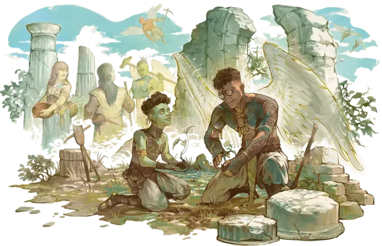

Аасимар
Aasimar

Тип существа Гуманоид
Размер Средний (рост около 4-7 футов) или Маленький (рост около 2-4 футов); выберите вместе с видом
Скорость 30 футов
Аасимары — это смертные, которые несут в своих душах искру Верхних Планов. Независимо от того, произошли они от ангельского существа или наделены силой небожителя, они могут раздуть эту искру, чтобы нести свет, исцеление и небесную ярость.
Аасимар может появиться в любой общине смертных. Они похожи на своих родителей, но живут до 160 лет и обладают особенностями, указывающими на их небесное наследие — такими как металлические веснушки, светящиеся глаза, нимб или ангельский цвет кожи (серебристый, опалесцирующий зеленый или медно-красный). Эти особенности поначалу проявляются едва уловимо и становятся очевидными, когда аасимар полностью раскрывает свою природу небожителя.
Особенности
Вы обладаете следующими особенностями вида:
Небесное сопротивление. У вас есть Сопротивление Некротическому урону и урону Излучением.
Тёмное зрение. У вас есть Тёмное зрение дальностью 60 футов.
Исцеляющие руки. Действием Магия вы касаетесь существа и бросаете к4 в количестве, равном вашему Бонусу владения. Существо восстанавливает количество Хитов, равное сумме бросков. Как только вы используете эту особенность, вы не сможете сделать это снова, пока не завершите Долгий отдых.
Несущий свет. Вы знаете заговор Свет. Ваша заклинательная характеристика для него — Харизма.
Небесное откровение. По достижению 3-го уровня персонажа вы можете Бонусным действием преобразиться, согласно одному из приведенных ниже вариантов (вы выбираете при каждом преобразовании). Преобразование длится 1 минуту или до тех пор, пока вы её не завершите (действий не требуется). Как только вы используете эту особенность, вы не сможете сделать это снова, пока не завершите Долгий отдых.
Пока преобразование длится, когда вы наносите цели урон атакой или заклинанием, можете нанести ей дополнительный урон, равный вашему Бонусу владения. Для Савана смерти это Некротический урон, а для Небесных крыльев и Сияющей души — урон Излучением. Вы можете нанести этот дополнительный урон только раз в каждый ваш ход.
Вы выбираете преобразование из следующих вариантов:
Небесные крылья. Два призрачных крыла временно вырастают из вашей спины. Пока преобразование длится, у вас есть Скорость полёта, равная вашей Скорости.
Сияющая душа. Обжигающий свет временно исходит из ваших глаз и рта. Пока преобразование длится, вы излучаете Яркий свет в радиусе 10 футов и Тусклый свет ещё на 10 футов, и в конце каждого из ваших ходов каждое существо в пределах 10 футов от вас получает урон Излучением, равный вашему Бонусу владения.
Саван смерти. Ваши глаза на мгновение превращаются в озера тьмы, а из вашей спины временно вырастают нелетающие крылья. Все существа в пределах 10 футов от вас, кроме ваших союзников, должны преуспеть в спасброске Харизмы (Сл 8 + ваши модификатор Харизмы и Бонус владения), иначе получат состояние Испуганный до конца вашего следующего хода.